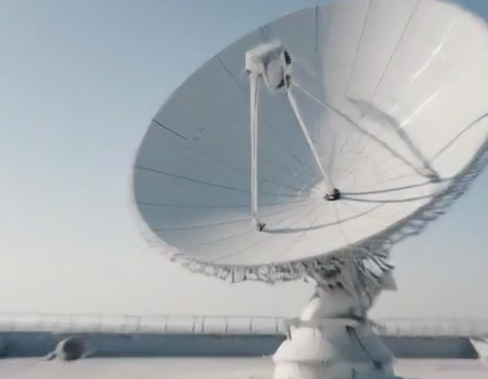

The Cloud Playout TCO Trap: Why AWS MediaLive Looks Cheap Until It Isn't
Cloud playout pricing looks linear on the slide deck and exponential on the invoice. The real cost curve for MediaLive + MediaPackage, and where the break-even with Grass Valley Ignite actually sits.

AWS MediaLive is the default answer when broadcast organisations ask about cloud playout. The per-channel pricing looks straightforward at first glance. The actual total cost of ownership looks very different after the first full year of production invoices.
What the slide deck shows
AWS MediaLive is priced per input-output channel-hour. A single HD channel running 24/7 costs roughly $2,000–$4,000 per month depending on codec and profile — competitive with the depreciation cost on a hardware channel-in-a-box. This is the number that appears in cloud migration business cases.
What the invoice shows
MediaLive does not run in isolation. A production-ready cloud playout stack also requires MediaPackage for origin packaging, CloudFront for CDN delivery, S3 for asset storage, and EC2 for the graphics and automation layer. Each service has its own pricing model, and the interactions between them create cost curves that are difficult to predict from first principles.
Data transfer between AWS services in the same region is free — but data transfer out to CDN edges, to on-premises systems, and to third-party distribution partners is charged at rates that compound quickly for high-bitrate live channels. A single HD channel at 10 Mbps running 24/7 generates approximately 3.2 TB of egress per day. At AWS standard egress pricing, this adds $280–$400 per month per channel before CDN costs.
The MediaPackage multiplier
MediaPackage charges per gigabyte of content processed and per gigabyte of content delivered. For a live channel packaging to HLS, DASH, and CMAF simultaneously — which is standard for multi-platform distribution — the processing cost applies to every output format. A channel that delivers to three packaging formats costs three times the MediaPackage processing fee, applied continuously for the duration of the channel.
Where the break-even actually sits
A genuine TCO comparison between cloud playout and an on-premises solution like Grass Valley Ignite or Pebble Marina requires modelling the full cost stack over a five-year period: capital expenditure and depreciation for hardware, support contracts, data centre space and power, staff time for maintenance and upgrades, and the opportunity cost of capital committed to long-term infrastructure.
For organisations running fewer than ten channels, cloud playout typically has a higher five-year TCO than an equivalent on-premises deployment, primarily because the per-hour billing model does not benefit from the economies of scale that hardware amortisation provides. For organisations running more than twenty channels with variable load — event-driven channels, pop-up streams, seasonal programming — cloud economics become genuinely favourable because idle capacity costs nothing.
What the business case should include
Any cloud playout business case that does not include a detailed line-item breakdown of egress costs, packaging costs, CDN costs, and the operational overhead of managing cloud infrastructure is incomplete. The per-channel-hour headline figure is the starting point, not the conclusion.